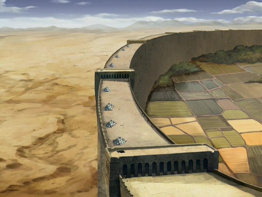
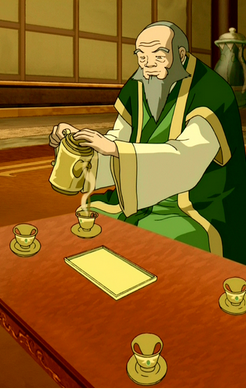
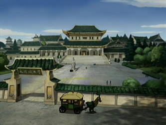
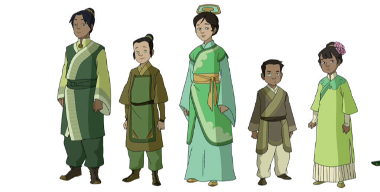

Ir a la parte de abajo
Costumbres
La gente de Ba Sing Se valora el orden y la estabilidad por sobre la libertad. La ley y el orden son mantenidos por el Dai Li para asegurar que la sociedad no caiga dentro de un caos.
La gente de Ba Sing Se tiene una variedad de actividades recreativas disponible, incluyendo spas, casas de poesía, tiendas, restaurentes, y el zoológico de Ba Sing Se. El té es una de las formas más comunes de relajarse en la ciudad después del trabajo.
La Universidad de Ba Sing Se asegura que muchas familias de la clase media y alta puedan tener una educación superior.
Los Maestros Tierra son altamente valorados, y operan muchos proyectos cívicos, desde el sistema de monorriel hasta las puertas de la ciudad.

La arquitectura de Ba Sing Se es ligeramente diferente a la de los demás pueblos vistos durante la serie. La mayoría de edificios son hechos de piedra, con soportes de madera y yeso que cubre el exterior. El color de las tejas de los techos en edificios indica el prestigio por sector social - las construcciones del sector bajo tienen tejas de color negro o verde oscuro, el sector medio tiene un color verde vibrante, y la nobleza del sector alto usa tejas amarillas como signo de clase.

Los símbolos del Reino Tierra están ubicados frecuentemente en las puertas, edificios del gobierno, y lugares militares.

Los ciudadanos de Ba Sing Se tienen mucho más variación de color en sus prendas de vestir que los otros lugares que son vistos a lo largo de la serie - azules, turquesas, marrones, dorados, que se pueden ver entre la aristocracia; mientras que la clase baja por lo general usa colores pardos y blancos.
La ciudad está dividida en diferentes niveles de acuerdo a la clase social; los guetos de los pobres y los refugiados están separados por paredes del resto de la ciudad.